Statistics

Mistakes
What's the prupose

Purpose of these analysis are to show you what are the most commons mistakes are you doing. In which symobls or symbol combinations you tend to make the most mistakes and in which words in particular.
Deleted and replaced symbols
Deleted and replaced symbols table show you what symbols you most often delete and replace with.
By hovering over and on the field you can see in which words you tend to do most of those mistakes.
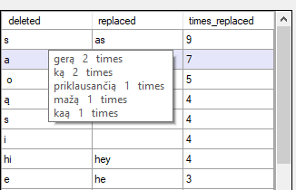
Words with most mistakes
This table shows you words in which you make the most mistakes
It is so you could know what words gives you the most trouble. And you should pay sliglty more focus when typing them
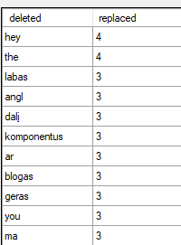
HeatMap
What's the prupose
Heatmaps are there to show you delays between your keyboard button presses, so you could check how your delay is progressing during the day or weeks with hourly and weekly heatmaps and provide interesting
information on your most often pressed buttons.
Information in heatmaps are being in shown by colors, it depends on color intensity. White being the least active while bright red - the most.
Grey color means that no presses have been done for the button or on that day or hour.
Delay HeatMap
Delay heatmap is to there provide you with information of your most slowly pressed buttons. By hovering over a button you can see an exact information of what is your avergae delay in presing that button.
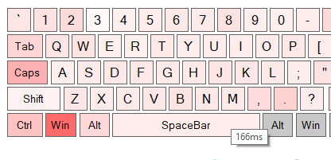
Times buttons were pressed heatmap
This heatmap is there to show you what are your most often pressed buttons and in which days or hours you work the most. By hovering over a button you can see how many times you have pressed the button and what is its percentage
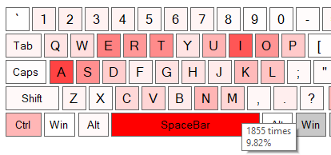
Keyboard HeatMap
Keyboard Heatmap shows you statistics of whole keyboard. By turning it off it shows only the left part of the keyboard. This heatmap is activated by default.
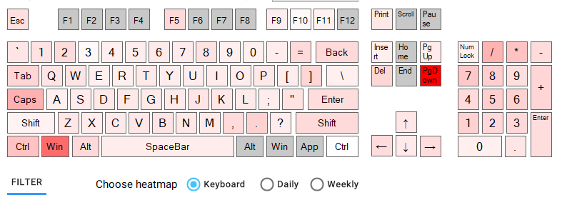
Daily HeatMap
Hourly heatmap shows you hourly statistics. What is average typing delay or how many buttons you have pressed during certain hours. You can turn it on by choosing daily heatmap option
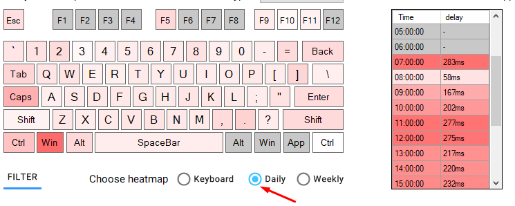
Daily HeatMap
Weekly heatmap shows you weekly statistics. What is average typing delay or how many buttons you have pressed during certain days of the week. You can turn it on by choosing weekly heatmap option
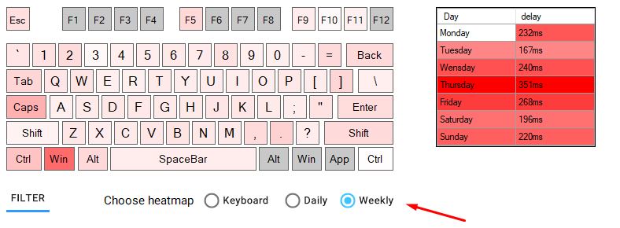
Line graphs
What's the prupose
Line graphs are there to show you correlation between your done mistakes and average typing speed.
Mistakes count based on typing speed
This gaph shows how much mistakes you are making based on your typing speed. Idealy you should aim to have high typing speed and low mistake count. By hovering over you can see exact typing speed and percantage of mistakes you are doing when you are typing on that speed.
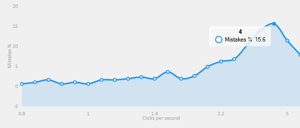
Typing speed
This graph is here just to show you progression or regression of your average typing speed.
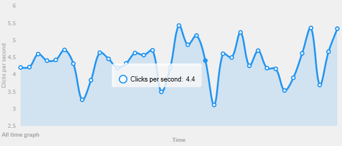
Time it takes to fix mistakes
This graph provides you information on what typing speeds you spend the most time fixing your mistakes. You can either choose to show graph in mind with mistakes count. So the higher mistake count the more time it will show. Or you can not account for mistakes count and simply show average time for a given typing speed .
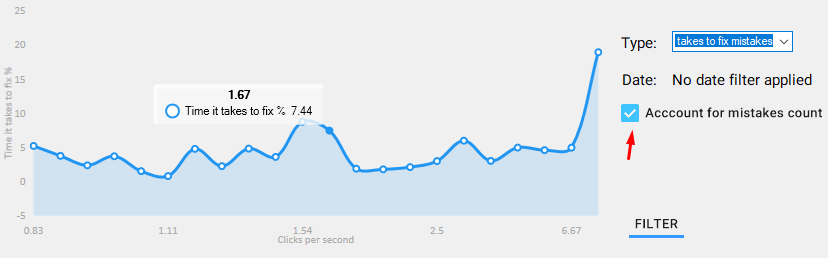
Current optimal typing speed
This graphs shows you what is your current optimal typing speed based on time spent fixing mistakes. Points where blue line goes above red one shows that ratio between typing speed and time it takes you to fix mistakes is higher than your average typing speed. Meaning curently this is your optimal typing speed. True typing speed means that typing speed is accounted for time it takes to fix the mistakes
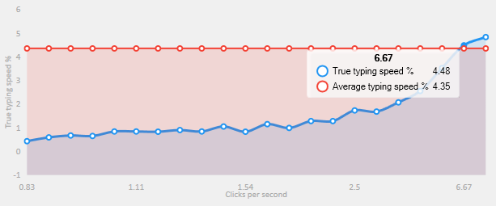
Filters
What can you filter
You can filter and and all of the statistics. Mistakes, line graphs and heatmaps. And there are two types of filters:
Program filters
You can permanatly filter out programs you don't want to see in your statistics. It's escpeically useful for programs in which work doesn't require particular word typing. That may include: Video games, photo and video editing software, engineering software etc.
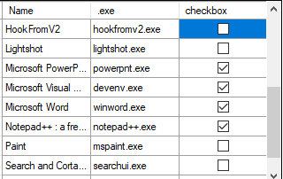
Date filters
Using date filters you can filter out data of a specific time you desire to see. You may choose exact date or from pre-defined presets.
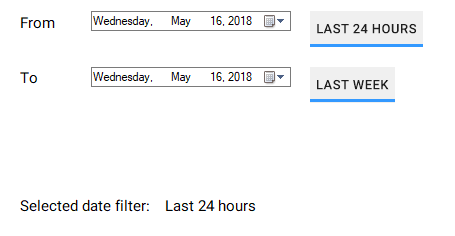